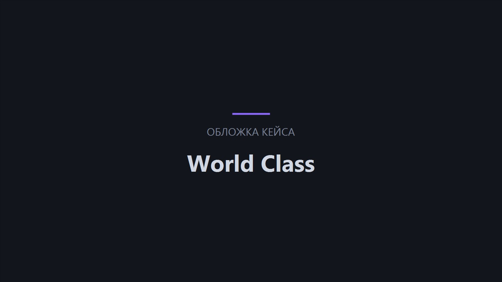

Оптимизация затрат
Снижаем расходы на связь и повышаем продуктивность.
- Экономия
- Связь
- Продуктивность
Устанавливаем и запускаем IP-АТС на базе Asterisk под задачи компании: подбираем оборудование, настраиваем линии и сценарии вызовов, связываем станцию с CRM и Битрикс24 и обучаем сотрудников. Работаем по договору — смета и сроки фиксируются до старта.
стоимость внедрения
недель запуск АТС
месяцев гарантия на работы


Внедрение IP-АТС — это не только установка станции. Проектируем архитектуру под ваши процессы, подбираем оборудование, настраиваем шлюзы, IP-телефоны и сценарии обработки вызовов, связываем телефонию с Битрикс24, 1С и CRM. Проверяем станцию на нагрузке, обучаем сотрудников и запускаем систему с поддержкой на старте, чтобы связь работала с первого дня.
Аналоговая или устаревшая АТС не справляется: связь пропадает, функций не хватает
Аренда оборудования и дорогие звонки: расходы на связь растут каждый месяц
Новый офис, отдел или сотрудники — и снова не хватает номеров и линий
Телефония не связана с CRM: менеджер не видит, кто звонит, и историю обращений
Связь держится на одном человеке, который «знает, как настроено»
Нет записей разговоров и статистики звонков — качество работы не измерить
Снижаем расходы на связь и повышаем продуктивность.
Глубоко знаем нюансы настройки и интеграции IP-АТС.
Адаптируем систему под ваши бизнес-процессы.
Полный спектр: от установки до технической поддержки.
Передовые технологии для стабильной работы и защиты данных.
Можно заключить договор на круглосуточную техподдержку.
Стоимость зависит от масштаба и задач. Точную смету фиксируем в договоре — до начала работ.
Станция Asterisk, шлюзы и IP-телефоны, базовые сценарии звонков, обучение сотрудников — запуск от 3 недель.
Распределённая АТС, отказоустойчивость, интеграция с CRM и Битрикс24, модули обзвона и статистики — смета по проекту.
Шаг 1 из 4
Теперь у нас есть верхнеуровневые требования к вашему проекту. Заполните контактные данные ниже, и наши менеджеры оперативно свяжутся, чтобы сориентировать вас по стоимости и срокам реализации проекта.
Изучаем текущую телефонию, схемы звонков и потребности отделов. Проектируем архитектуру АТС, подбираем оборудование и ПО, фиксируем смету и сроки в договоре.
Проект АТС, смета и сроки
Проверяем сеть и серверную часть, готовим сервер под Asterisk, при необходимости настраиваем сетевое оборудование для стабильной передачи голоса.
Готовая инфраструктура
Разворачиваем Asterisk, настраиваем шлюзы, IP-телефоны, SIP-транки, внутренние номера и основные сценарии обработки вызовов.
Работающая АТС с номерами
Связываем станцию с CRM, Битрикс24 и 1С, подключаем запись и статистику. Проверяем сценарии, качество связи и устойчивость под нагрузкой.
Проверенная АТС в контуре компании
Запускаем систему в рабочий режим, обучаем администраторов и сотрудников, передаём инструкции. Остаёмся на связи по гарантии до 24 месяцев.
Запущенная АТС и обученная команда
Команда формируется индивидуально под каждый проект — состав и роли зависят от задач и сложности проекта
 Проектный менеджер
Координирует работу команды, контролирует сроки, коммуникацию и выполнение задач по проекту.
Проектный менеджер
Координирует работу команды, контролирует сроки, коммуникацию и выполнение задач по проекту.
 Бизнес-аналитик
Изучает задачи бизнеса, собирает требования и помогает определить структуру, функции и приоритеты проекта.
Бизнес-аналитик
Изучает задачи бизнеса, собирает требования и помогает определить структуру, функции и приоритеты проекта.
 Системный инженер
Настраивает IP-АТС, серверное окружение, маршрутизацию звонков и техническую инфраструктуру решения.
Системный инженер
Настраивает IP-АТС, серверное окружение, маршрутизацию звонков и техническую инфраструктуру решения.
 Фронтенд-разработчик
Реализует интерфейсы, адаптивность и интерактивные элементы, обеспечивая корректную работу проекта на всех устройствах.
Фронтенд-разработчик
Реализует интерфейсы, адаптивность и интерактивные элементы, обеспечивая корректную работу проекта на всех устройствах.
 Бэкенд-разработчик
Отвечает за серверную логику, интеграции, базы данных и стабильную работу функционала системы.
Бэкенд-разработчик
Отвечает за серверную логику, интеграции, базы данных и стабильную работу функционала системы.
 QA-инженер (тестировщик)
Проверяет функциональность, находит ошибки и контролирует качество проекта перед запуском.
QA-инженер (тестировщик)
Проверяет функциональность, находит ошибки и контролирует качество проекта перед запуском.
 DevOps-инженер
Настраивает окружение, мониторинг, резервное копирование и обеспечивает надёжную работу проекта.
DevOps-инженер
Настраивает окружение, мониторинг, резервное копирование и обеспечивает надёжную работу проекта.
 Аккаунт-менеджер
Сопровождает клиента после запуска, помогает с новыми задачами, приоритетами и дальнейшим развитием проекта.
Аккаунт-менеджер
Сопровождает клиента после запуска, помогает с новыми задачами, приоритетами и дальнейшим развитием проекта.
Объединить телефонию нескольких площадок в одну систему. Внутренние звонки идут по коротким номерам, тарифы считаются по фактическому использованию.
Распределять звонки между менеджерами и не терять обращения. Очереди и переадресация настраиваются под отдел.
Связать звонки с карточками клиентов и сделками. При звонке карточка открывается сама, история не теряется.
Маршрутизация, очереди и запись разговоров под поток звонков. Нагрузка распределяется без ручной работы оператора.
Получить корпоративную телефонию без сложной инфраструктуры. Базовая АТС на сервере не требует отдельного парка оборудования.
Подключить АТС новой площадки в сжатые сроки. Оборудование и номера согласуем заранее, чтобы телефон работал с первого дня.
Официальные Платиновые партнёры Битрикс24 и Золотые партнёры 1С-Битрикс. Имеем сертификат Крупных корпоративных внедрений.


От лица компании ЗАО «СберЛизинг» выражаем искреннюю благодарность разработчикам компании ООО «Итач-софт» за их профессионализм и ответственность в создании нашего нового сайта, а также разработку калькулятора для расчета лизинговых платежей.
Благодаря Вашей компании ЗАО «СберЛизинг» получили качественный и функциональный сайт, который, на наш взгляд, достойно представляет нашу компанию, а также удобный инструмент для расчетов и будущих возможных интеграций в иные программные комплексы компании.

От лица нашей компании хочу сделать отзыв о совместно работе с ООО «Итач-софт».
Компания «Итач-софт» очень ответственно подходит к нашим проектам. Они сформировали команду с которой налажена очень быстрая обратная связь.
Все процессы максимально понятны и прозрачны. Мы добавлены на рабочий портал компании, где можем коммуницировать по задачам. Решать что-то по ходу и сразу. Делать быстрые созвоны. Это позволяет избежать затягивания разработки и принятия неправильных, неэффективных решений.

ОАО «БНБ-Банк» искренне благодарит компанию ООО «Итач-софт» за качественное и своевременное обслуживание сайта нашей организации.
За время работы сотрудники компании ООО «Итач-софт» проявили себя как добросовестные, исполнительные и отзывчивые специалисты. Все возникающие вопросы решались ими профессионально и в срок.
Особенно хочется отметить ответственное и внимательное отношение к требованиям и пожеланиям со стороны нашей компании.

Настоящим письмом выражаем свою искреннюю благодарность компании «Итач-софт» за отличную работу, которую проделала Ваша компания по созданию и запуску нашего сайта, а также по разработке собственной специализированной CRM-системы.
В работе с Вами мы увидели профессионализм, знание технологий, системный подход, соблюдение сроков, способность увидеть и понять наши потребности, и предложить лучшее решение.
Надеемся на дальнейшее плодотворное сотрудничество с Вами!
Обследование и проектирование, подбор оборудования, установка ОС и Asterisk, настройка шлюзов, телефонов, линий и сценариев вызовов, интеграция с CRM и Битрикс24, тестирование, обучение сотрудников и запуск. Точный состав фиксируем в договоре до старта.
Внедрение — от 90 000 ₽, типовой запуск — от 3 недель. Итоговая смета зависит от количества пользователей, распределённости офисов, сложности сценариев и интеграций. Предварительную оценку даём бесплатно.
В большинстве случаев да: IP-телефоны и сетевое оборудование часто подходят. Возможность применения определяем после анализа инфраструктуры — на аудите.
С Битрикс24, 1С, самописными CRM и helpdesk-системами: карточка клиента при звонке, запись разговоров, статистика и автоматический обзвон. Подключаем модули очередей и отчётов по звонкам.
Работаем по гарантии до 24 месяцев, консультируем администраторов и сопровождаем станцию. При необходимости подключаем техническую поддержку по SLA — вплоть до режима 24/7.
Опишите задачу — в течение часа ответим, как её решить, и рассчитаем предварительную стоимость.

Кейс · Белтелеком
Проект по внедрению IP-АТС на базе Asterisk и интеграции с Битрикс24 для РУП «Белтелеком» позволил компании улучшить внутреннюю и внешнюю коммуникацию, повысить эффективность работы и снизить затраты на связь. Постоянная техническая поддержка и обновление системы обеспечивают бесперебойную работу.

1
месяц — длительность проекта
4
специалистов в команде
Организована регулярная техническая поддержка IP-АТС и Битрикс24: постоянный мониторинг, обновления для безопасности и новых функций, оперативное реагирование на инциденты — минимальные простои и сниженные риски для бизнеса.
Кейс · Пинскдрев
Проект по внедрению IP-АТС на базе Asterisk и интеграции с Битрикс24 для ЗАО «Холдинговая компания «Пинскдрев» был успешно реализован, что позволило компании улучшить внутреннюю и внешнюю коммуникацию, повысить эффективность работы и снизить затраты на связь. Постоянная техническая поддержка и обновление системы обеспечивают бесперебойную работу и стабильное развитие бизнеса.
1
месяц — длительность проекта
4
специалистов в команде
Повышение эффективности работы сотрудников за счет интеграции телефонной системы с CRM-системой, что позволило оптимизировать процессы обработки звонков и взаимодействия с клиентами.
Снижение затрат на связь благодаря внедрению IP-АТС, которая позволяет экономить на междугородних и международных звонках.
Улучшение клиентского сервиса через автоматизацию процессов и улучшение качества обработки звонков.
Кейс · Белита
Проект по внедрению IP-АТС на базе Asterisk и интеграции с Битрикс24 для СП «БЕЛИТА» ООО был успешно реализован, что позволило компании улучшить внутреннюю и внешнюю коммуникацию, повысить эффективность работы и снизить затраты на связь. Постоянная техническая поддержка и обновление системы обеспечивают бесперебойную работу и стабильное развитие бизнеса.
1
месяц — длительность проекта
4
специалистов в команде
Повышение эффективности работы сотрудников за счет интеграции телефонной системы с CRM-системой, что позволило оптимизировать процессы обработки звонков и взаимодействия с клиентами.
Снижение затрат на связь благодаря внедрению IP-АТС, которая позволяет экономить на междугородних и международных звонках.
Улучшение клиентского сервиса через автоматизацию процессов и улучшение качества обработки звонков.
Кейс · Активлизинг
Для компании «Активлизинг» была внедрена IP-АТС на базе Asterisk, что позволило оптимизировать телефонную связь, улучшить качество обслуживания клиентов и снизить затраты на связь. Масштабируемость новой системы обеспечивает гибкость в адаптации к росту и изменяющимся потребностям бизнеса.
1
месяц — длительность проекта
3
специалистов в команде
Снижение затрат на телефонную связь благодаря использованию IP-АТС и оптимизации управления вызовами.
Улучшение качества клиентского обслуживания за счет сокращения времени ожидания и повышения эффективности работы операторов.
Повышение эффективности внутренних коммуникаций и гибкости системы, что позволяет компании адаптироваться к изменениям и расти.
Внедрение IP-АТС на базе Asterisk для компании «Активлизинг» стало ключевым шагом в модернизации их коммуникационной инфраструктуры. Новая система обеспечила более качественное и экономичное управление телефонной связью, улучшила клиентский сервис и подготовила компанию к будущим вызовам и возможностям.
Кейс · World Class
Для компании WorldClass была внедрена IP-АТС на базе Asterisk, что позволило оптимизировать телефонную связь, улучшить качество обслуживания клиентов и снизить затраты на связь. Масштабируемость новой системы обеспечивает гибкость в адаптации к росту и изменяющимся потребностям бизнеса.

1
месяц — длительность проекта
3
специалистов в команде
Проведено обучение сотрудников — компания быстро перешла на новую телефонную платформу. Организованы регулярная техническая поддержка и мониторинг для стабильной работы системы.